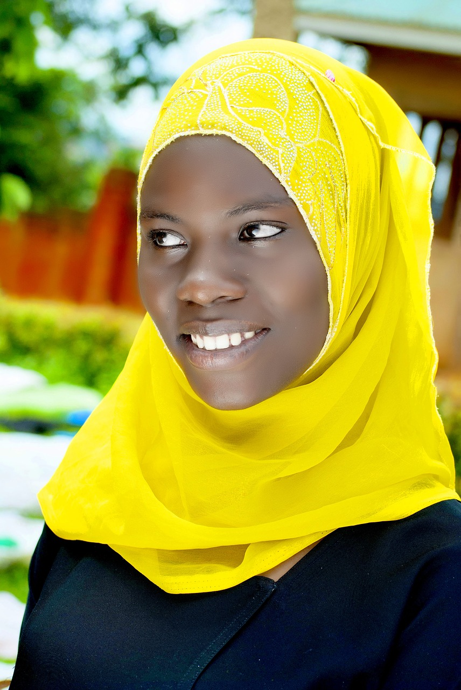

About us


About us
My girl international is an international, non-governmental and not-for-profit organization registered in 2001
after a research project that was done and found that the girl child was suffering globally.
We aim to drastically reduce new HIV infections, increase equitable access to quality health services
through innovative, integrated, comprehensive and high impact services and programs that can be delivered at scale.
vission
Empower the girl child
Mission
End sexual violence against women and children
Our Co-values
Caring Attitude
We are supporting orphans, vulnerable children, and adults
to access education and other opportunities that will enable them to achieve their full potential.
Building Capacity
We are building the capacities of poverty-stricken
communities in Northern Kenya so they can overcome political and economic marginalisation perpetuated by political leaders
inside and outside the region.
Respectfullness
We will strive to ensure poor communities in glabally
are given the opportunity to play an instrumental role in addressing their underdevelopment.
message from CEO
Whether you are already familiar with our work or visiting this site for the first time, thank you for taking an interest in PCI’s ever-expanding story. We are a dynamic organization with an extraordinary culture and an incredible commitment to our mission. Our staff members have strong technical capability and deep roots in our communities that allow us to make meaningful, measurable and lasting impact in partnership with the people we serve.
Part of our common DNA is a sense of deep empathy; concern for others; intellectual curiosity and a dedication to learning, innovation and progressing our individual and collective competence.
We approach work with a sense of urgency because we understand the challenges we face as a global community. But we also approach our work with a sense of hope, optimism, and even unabashed idealism. We know – in our hearts and in our heads – that empowering our communities to lead long-term transformational change is not only possible; it is essential.
At PCI we strive to create a culture that honors the dignity of every individual. Whether an employee, volunteer, or local partner, we are all expected to act with the highest respect for each other and the communities we serve.
As you learn more about our organization and programming,
I invite you to join us.
Carrie Hessler-Radelet
President & CEO, PCI